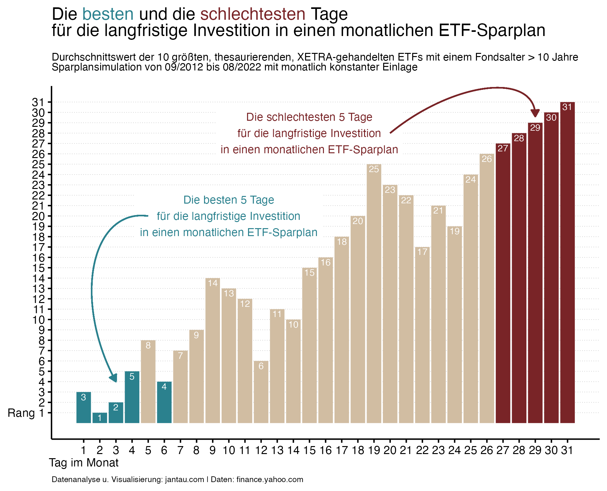
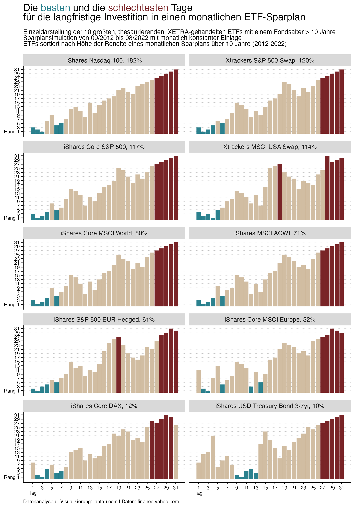
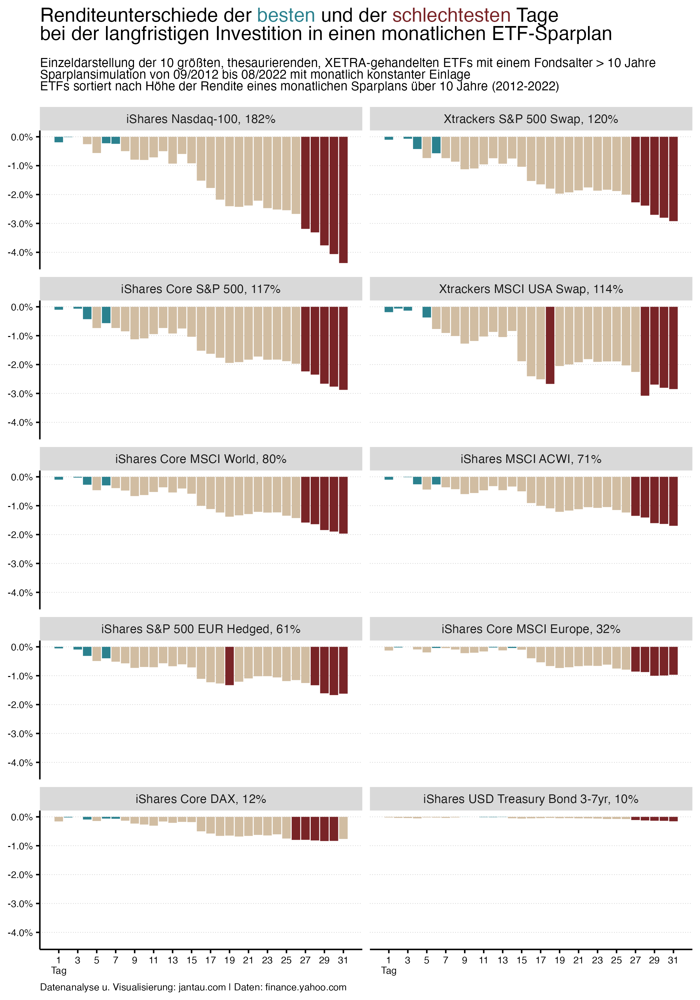

Der mit Abstand meistgelesene Beitrag auf meinem Blog ist Wann soll ich in meinen ETF-Sparplan investieren?. Hier bin ich der Frage nachgegangen, welcher Tag im Monat der beste ist, um kontinuierlich in einen ETF-Sparplan zu investieren. Der Post ist vor etwa einem Jahr erschienen. Es ist nun Zeit für ein Update, das zwei Aspekte präzisiert:
Ich untersuche wirklich alle Tage des Monats. Im ersten Post hatte ich aus technischen Gründen nur Tage untersucht, an denen sicher noch im entsprechenden Monat der Anlagebetrag investiert werden konnte. Nun habe ich eine Möglichkeit gefunden, wie ich einen Sparplan zum 31. jeden Monats simulieren kann, auch wenn die tatsächliche Anlage dann häufig erst zu Beginn des nächsten Monats erfolgt.
Es wird nicht nur ein einzelner ETF untersucht, sondern die zehn größten an der Deutschen Börse gehandelten ETFs. Durch die Analyse der unterschiedlichen ETFs kann ein aussagekräftiger Mittelwert gebildet werden.
Die Daten der ETFs habe ich von der Deutschen Börse bezogen. Analysiert werden lediglich die thesaurierenden ETFs, damit unterschiedliche Ausschüttungen nicht den Vergleich erschweren. Zudem muss das Fondsalter mindestens 10 Jahre betragen, damit ein längerer Zeitraum untersucht werden kann.
Folgende ETFs sind die größten, thesaurierenden ETFs, die an der Deutschen Börse gehandelt werden.
| ETF | Ticker |
Größe ETF. (in Mio. EUR) |
Sparplandauer (in Monaten) |
Rendite (in %)1 |
|---|---|---|---|---|
| iShares Core S&P 500 | SXR8.DE | 55188.3 | 120 | 116.7 |
| iShares Core MSCI World | EUNL.DE | 42514.0 | 120 | 80.3 |
| iShares Nasdaq-100 | SXRV.DE | 7400.4 | 120 | 181.6 |
| Xtrackers S&P 500 Swap | D5BM.DE | 6466.0 | 120 | 119.5 |
| iShares MSCI ACWI | IUSQ.DE | 5408.4 | 120 | 71.2 |
| iShares Core MSCI Europe | EUNK.DE | 5370.7 | 120 | 32.5 |
| iShares Core DAX | EXS1.DE | 5231.7 | 120 | 12.1 |
| iShares S&P 500 EUR Hedged | IBCF.DE | 4707.8 | 120 | 60.7 |
| Xtrackers MSCI USA Swap | DBXU.DE | 4143.4 | 120 | 113.8 |
| iShares USD Treasury Bond 3-7yr | SXRL.DE | 4130.1 | 120 | 10.0 |
| Die 10 größten, thesaurierenden, XETRA-gehandelten ETFs mit einem Fondsalter > 10 Jahre (Stand: Juli 2022) | ||||
| 1 Die Rendite bezieht sich auf den Endwert des Sparplans im Verhältnis zum gesamten über die Sparplandauer investierten Betrag. |
Die Liste der ETFs ist erfreulicherweise ziemlich gut durchmischt. Lediglich der S&P 500-Index ist durch mehrere ETFs vertreten. Und zwar durch einen iShares- und einen Xtrackers-ETF, die sich ziemlich ähnlich sind, und dann ein weiteres Mal durch einen währungsabgesicherten (hedged) ETF. Von MSCI ist je ein ETF auf den USA-, den World-, den Europe- und den All Countries World-Index vertreten. Des Weiteren sind ETFs auf die Indizes NASDAQ 100 und DAX unter den analysierten Fonds. Und zuletzt hat sich ein einzelner Anleihen-ETF in die Liste verirrt. Hierbei handelt es sich um einen in mittelfristige US-Staatsanleihen investierenden Fonds von iShares.
Es fällt auf, dass mit iShares und Xtrackers nur zwei Fonds-Anbieter vertreten sind. Andere Anbieter, die heute große ETFs verwalten (wie etwa Vanguard, Amundi oder Invesco), spielten vor 10 Jahren noch keine (herausgehobene) Rolle auf dem europäischen ETF-Markt.
Für jeden der 10 ETFs wurden im nächsten Schritt 31 Sparpläne simuliert — für jeden Tag im Monat einer. Über 10 Jahre (von September 2012 bis August 2022) wurde pro Sparplan und ETF immer am gleichen Tag im Monat die Summe X investiert. Fiel der entsprechende Tag einmal nicht auf einen Bankarbeitstag, wurde die Summe am darauffolgenden Bankarbeitstag investiert, was unter Umständen auch erst im nächsten Monat sein konnte (beispielsweise beim Sparplan für den 31. Tag im Monat). Insgesamt wurden für jeden Sparplan 120 (12 Monate * 10 Jahre) Einlagen berücksichtigt und 310 Sparpläne simuliert (10 ETFs * 31 Tage im Monat). Mögliche Order- oder Depotgebühren wurden bei der Berechnung der Rendite nicht berücksichtigt, die Fondsgebühren sind hingegen in den Kursdaten enthalten und wurden somit berücksichtigt.
{{% callout note %}} Wie alle Analysen kann die Simulation auf dem GitHub-Repositorium dieses Blogs transparent nachvollzogen und reproduziert werden. {{% /callout %}}
Die 31 Tage im Monat wurden nach der Rendite der Sparplansimulationen gerankt. Der erste Chart zeigt den Mittelwert dieses Ranking über alle untersuchten ETFs hinweg.
 Der zweite Tag im Monat ist der beste Tag, um in einen monatlichen ETF-Sparplan zu investieren. Auf den Plätzen folgen der dritte und der erste Tag im Monat.
Die schlechteste Rendite erzielte im Mittel die regelmäßige Investition am 31. Tag des Monats, gefolgt vom 30. und vom 29. jeden Monats.
Das Ergebnis bestätigt die Untersuchung aus dem letzten Jahr. Grundsätzlich ist es am besten, so früh wie möglich im Monat zu investieren. Historisch betrachtet stiegen ETFs langfristig und deswegen war es stets rentabel, so lange bzw. so früh wie möglich investiert zu sein: “Time in the market beats timing the market.”
Nun wurden jedoch sehr unterschiedliche ETFs verglichen, die große Unterschiede in der Performance gezeigt haben. Der Spitzenreiter ist der NASDAQ 100-ETF, dessen Sparplan 182% Rendite erzielt hat. (Die Rendite bezieht sich auf den Endwert des Sparplans im Verhältnis zum gesamten über die Sparplandauer investierten Betrag.) Im Gegensatz hierzu hat in den letzten 10 Jahren ein DAX- oder ein MSCI Europe-ETF nicht besonders viel Freude gemacht und nur 12% bzw. 32% Rendite eingebracht.
Die deutlichen Unterschiede in der Performance der verschiedenen ETF-Sparpläne könnten auch den besten monatlichen Ausführungstag beeinflusst haben. Aus diesem Grund zeigt der nächste Chart die Ergebnisse für die einzelnen ETFs.

Das Ergebnis dieser Analyse zeigt, je erfolgreicher ein ETF war, desto eindeutiger ist das Muster: Die ersten Monatstage bringen mehr Rendite als die letzten. Bei weniger erfolgreichen ETFs ist das Muster nicht so eindeutig. Bei dem US-Staatsanleihen-ETF ist beispielsweise der 10. jeden Monats der beste Tag. Und beim MSCI Europe-ETF schneidet der 12. jeden Monats am drittbesten ab. Alle ETFs vereint jedoch, dass die letzten Tage im Monat die schlechtesten sind, um in einen Sparplan zu investieren.
Die Frage, die noch offen bleibt, lautet: Wie groß ist der Rendite-Unterschied der verschiedenen Ausführungstage. Die Unterschiede (in Prozentpunkten) der Sparpläne zeigt der letzte Chart, in dem ich die Rendite-Unterschiede (und nicht das Ranking) der unterschiedlichen Ausführungstage anzeige.

Je erfolgreicher ein ETF, desto größer sind auch die Unterschiede zwischen dem besten und dem schlechtesten Ausführungstag. Da die erfolgreichen ETFs relativ kontinuierlich steigen, ist es umso effektiver, frühzeitig investiert zu sein, auch wenn es sich bei einer monatlichen Einlage nur um einige Wochen oder Tagen Unterschied handelt.
Der maximale Renditeverlust durch den schlechtesten Tag im Monat liegt zwischen -4,4 Prozentpunkten (beim NASDAQ 100-ETF) und -0,15 Prozentpunkten (beim US-Staatsanleihen-ETF). Über einen Zeitraum von 10 Jahren ist das einerseits nicht besonders viel. Es gibt wichtigere Entscheidungen, die die Rendite erheblicher beeinflussen können. An erster Stelle steht sicherlich die Frage, in welchen ETF ich überhaupt investieren soll und ob ich in der Lage bin, durch die Höhen und Tiefen des Marktgeschehens kontinuierlich zu sparen. Zudem können Gebühren und Replikationsart die Rendite in ähnlichem Umfang wie der Anlagetag beeinflussen. Die beiden untersuchten S&P 500-ETFs weisen beispielsweise einen Renditeunterschied von 3 Prozentpunkten auf, der vermutlich durch die Replikationsart erklärt werden kann.
In absoluten Zahlen können die Prozentpunkte Unterschied allerdings schon ins Gewicht fallen. Habe ich es beispielsweise geschafft, von 2012 bis 2022 monatlich 1000 Euro in den NASDAQ 100-ETF von iShares zu investieren, dann liegen beim besten Ausführungstag (der 3. jeden Monats) am Ende Anteile im Wert von 337873 Euro im Depot. Der schlechteste Ausführungstag (der 31. jeden Monats) ergibt einen Endbetrag von 332627 Euro und somit 5246 Euro weniger. Bei der Investition in den MSCI World-ETF würde der Unterschied zwischen dem besten und schlechtesten Ausführungstag 2359 Euro betragen.
So früh wie möglich im Monat zu investieren ergibt also absolut Sinn, insbesondere, wenn so vermieden wird, dass der Anlagebetrag mehrere Wochen uninvestiert auf dem Depotkonto liegt. Falls der Sparplan einen flexiblen bzw. frühen Ausführungstag jedoch nicht hergibt, würde ich vermutlich nach wie vor nicht alles umstellen, um über den perfekten Anlagetag die letzten Prozente herauszuholen — obwohl ich bei meinem suboptimalen Ausführungstag über maxblue (der 20. jeden Monats) langsam ins Grübeln komme.
Den für diesen Beitrag erstellten Code findest du hier: https://github.com/jantau/jantau
Hat dir der Post gefallen? Melde dich für meinen Newsletter an, um über neue Beiträge informiert zu werden.